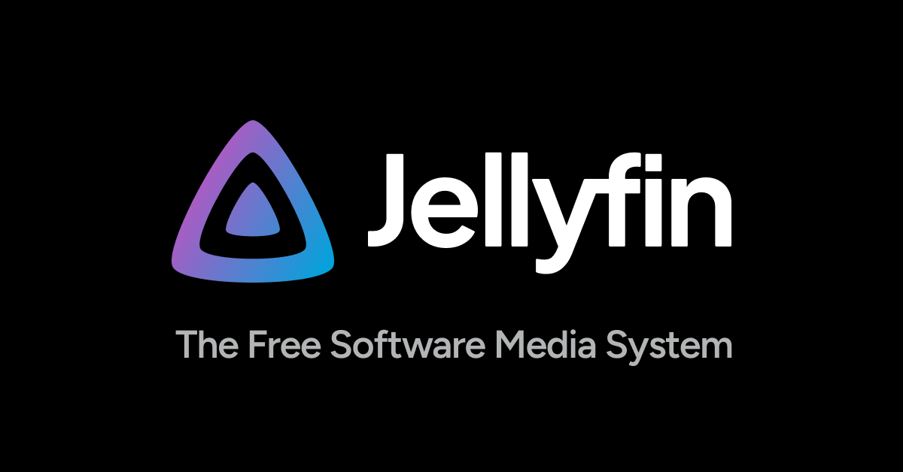

YT → Jellyfin Archiver
Architecture dashboard: auth flow requirements, tool evaluation axes, and Jellyfin output contract for replacing a flaky NAS container with a self-hosted YouTube archiver.
43 citations
14 min read
expedition
2026-06-07
pipeline overview
YouTube
channels
playlists · WL
playlists · WL
source
Auth Layer
Firefox cookies
PO token provider
PO token provider
critical

yt-dlp Core
⭐ 168k · active
pot plugin req'd
pot plugin req'd
stable
Output Format
TV-show naming
NFO sidecars
NFO sidecars
tool-dependent

Jellyfin
media server
TV library only
TV library only
contract clear
The critical coupling. An archiver must solve auth and output simultaneously. Tools that handle auth but produce flat output need a separate rename + NFO layer (ytdl-sub fills this role but adds config overhead). Tools with native Jellyfin output must also keep their yt-dlp dependency current enough for PO token support. Neither axis can be delegated or deferred.
configuration requirements
🔑 Auth Requirements
cookie.browser
required.cookies
auth.hash
SAPISIDHASH = SHA1(timestamp + SAPISID + origin)po_token
pot.provider
bgutil-ytdlp-pot-provider ⭐ 555 or yt-dlp-get-pot ⭐ 112
pot.binding
cookie.lifespan
~2 weeks; open tabs trigger background rotation → invalidation [3]
cookie.export
Private/incognito window; close tab immediately after export [4]
rate.limit
~2,000 videos/hr authenticated · ~300/hr guest [3]
acct.strategy
Dedicated throwaway Google account for NAS; keep primary account isolated from rotation risk
📺 Jellyfin Output Contract
folder.structure
Channel/Season XX/Channel - SXXEXX.mkv [5]ep.numbering
Zero-padded required:
S01E01 not S1E1nfo.series
tvshow.nfo at channel root [6]nfo.episode
<filename>.nfo alongside each video filemetadata.priority
NFO > remote providers — survives library rescans [6]
library.type
TV Shows — dedicated, YouTube-only library
segregation
Do NOT mix with live TV or movies — degrades metadata matching [7]
nfo.saver
Enable Jellyfin "Nfo Saver" to auto-write metadata edits back to NFO files
specials
Place in
Season 00/ foldercritical blockers
🚫
PO Token: mandatory, not optional
Any archiver running a stale yt-dlp build or without a configured PO token provider returns
HTTP 403 on all video streams — regardless of UI polish, subscription features, or metadata handling. PO tokens bind to DATASYNC_ID (authenticated GVS), VISITOR_DATA (unauthenticated GVS), and VIDEO_ID (Player/Subs contexts). [2]⚠️
Cookie Rotation: the silent failure mode for subscription workflows
Exported Firefox cookies expire in approximately 2 weeks. Leaving an authenticated browser tab open triggers background rotation scripts that invalidate already-exported cookies. Any unattended NAS archiver running channel subscriptions needs a built-in rotation strategy: scheduled Firefox re-export automation, or a dedicated throwaway Google account whose cookies can be refreshed without affecting the primary account. [3]
⚠️
Watch Later: polling only — not true two-way sync
The YouTube Data API v3 blocks
update, delete, and reorder on the Watch Later playlist (WL) with 403 — enforced server-side. Any archiver claiming "Watch Later sync" is doing authenticated yt-dlp polling of ?list=WL via browser cookies. Deletions from Watch Later in the YouTube UI cannot be mirrored to the local archive automatically. [8]candidate tool evaluation — 3-axis matrix — comparison not yet completed
TubeArchivist
Self-contained YouTube media server with Elasticsearch, subscriptions, and web UI. Ships its own yt-dlp integration.
PO token support ❓ unverified
Jellyfin TV output ❓ unverified
Active maintenance ❓ unverified
Pinchflat
Elixir-based archiver focused on channel/playlist subscriptions with a clean web UI and Docker deployment.
PO token support ❓ unverified
Jellyfin TV output ❓ unverified
Active maintenance ❓ unverified
ytdl-sub
Subscription + metadata layer on top of yt-dlp with declared Jellyfin/Kodi output presets. High config complexity.
PO token support ❓ unverified
Jellyfin TV output ❓ unverified
Active maintenance ❓ unverified
MeTube
Minimal yt-dlp web frontend designed for single-video and playlist downloads. No subscription or rename layer.
PO token support ❓ unverified
Jellyfin TV output ❓ unverified
Active maintenance ❓ unverified
YoutubeDL-Material
Angular + Node.js frontend with subscriptions, multi-user support, and theming. Bundles its own yt-dlp.
PO token support ❓ unverified
Jellyfin TV output ❓ unverified
Active maintenance ❓ unverified
Tartube
GTK desktop GUI for yt-dlp with channel/playlist management and scheduling. Desktop-first; NAS deployment harder.
PO token support ❓ unverified
Jellyfin TV output ❓ unverified
Active maintenance ❓ unverified
sub-research runs
survey
YouTube auth, cookies & Watch Later mechanics
recon
Jellyfin naming conventions & NFO expectations
survey
Tool feature & health comparison matrix
recon
Winner deploy config
open question — follow-up run required
unanswered after this expedition
Which candidates among TubeArchivist, Pinchflat, ytdl-sub, MeTube, YoutubeDL-Material, and Tartube handle PO token generation natively through their yt-dlp integration, produce Jellyfin-compatible TV-show output without a rename step, and have bus-factor > 1 with active releases in the last six months — all three simultaneously? Those three axes determine the ranked pick; none of the four sub-runs answered them.
axis 1 · PO token support
axis 2 · native Jellyfin TV output
axis 3 · bus-factor > 1 + active releases ≤ 6 months
yt-dlp ⭐ 168k ·
bgutil-pot-provider ⭐ 555 ·
yt-dlp-get-pot ⭐ 112
expedition · 43 citations · 2026-06-07